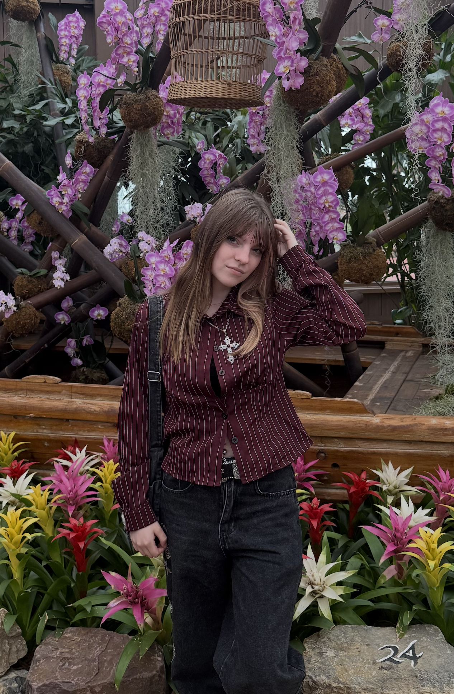

Selectie van Projecten
Klik op een project voor meer details & tools

Ik ben Natalia, student Mediavormgeven aan het Grafisch Lyceum Rotterdam. Ik breng verhalen tot leven met sterke typografie, rijke visuele identiteiten en doordacht digitaal & print ontwerp.
Klik op een project voor meer details & tools